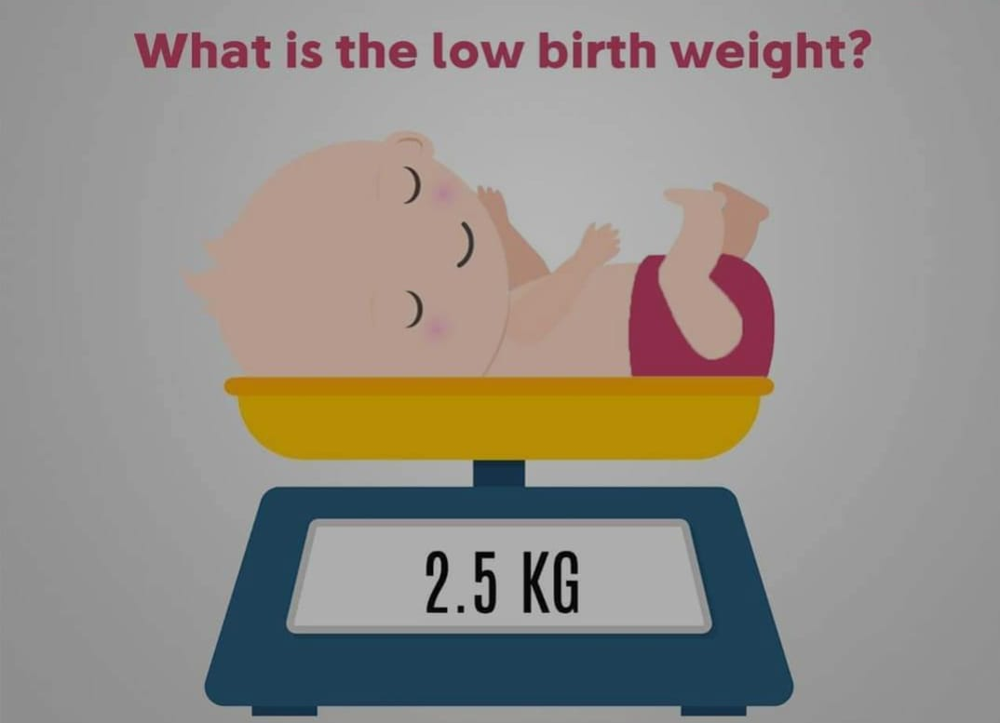
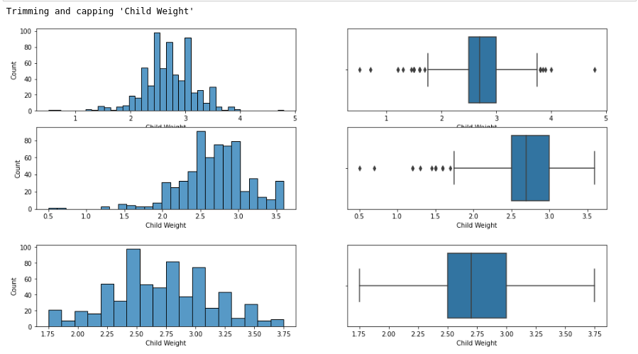
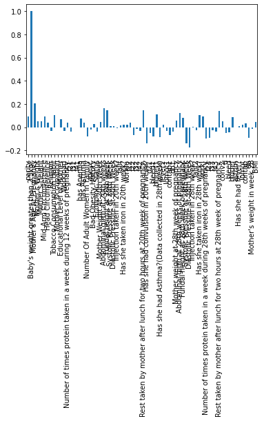
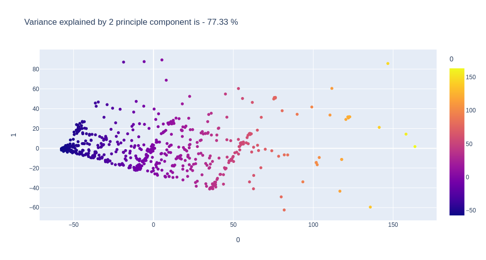

Early Prediction of Birth weight Based on Maternal Factors
Abhijit Paul
2021-10-25 Mon 00:00
Greetings!
I am Abhijit Paul. I am studying Software Engineering in University of Dhaka. I am currently a first year student.
My goal is to become a Data Scientist. Its on high demand in Bangladesh and I love the idea of extracting information from apparently random data.
I am currently focusing on the theoritical aspect of data analysis tools. How models, algorithms work, why they work etc.
Problem Introduction
LBW, NBW

According to a definition adopted by WHO in 1950, a human birth weight less than 2,500 gms. is termed as Low Birth Weight (LBW).
LBW Issues
- Neonatal mortality and infant mortality rates are significantly higher
- Many long-term problems such as morbidity and development disorders like higher incidence of cerebral palsy.
- Cognitive and neuropsychological problems, affects academic career.
- Weakened Immunity results in frequent illness.
- Asthma, repeated upper and lower respiratory infection and ear infection and epilepsy
- NBW phenomenon has a compounding effect in that women who were LBW babies themselves, are more prone to give birth to LBW babies
LBW in Our Country

In our country, the current estimate of incidence of LBW is approximately 30%.
Our Aim
- To identify a set of correlates of LBW that can be assessed by even community level health workers with a little training for taking measurements on BMI, mid-arm circumference, head circumference, abdominal girth and fundal height.
- Based on these correlates, to develop suitable tools for classifying pregnant women into two classes - prospective LBW mothers and NBW mothers, at the 28th week of pregnancy.
Decision Making Schemes
Lets dive into the details on how we reached to a amazing model to predict LBW children from our dataset.
Dataset
The data in the study are those collected from two reputed NGOs – Child in Need Institute in South 24 Parganas and Nivedita Community Care Centre in Hooghly, West Bengal.
| Observations | Features |
|---|---|
| 666 | 75 |
ML algorithm are compatible with such dataset with little feature engineering.
Renaming Features From the Documentation
The dataset had unambiguous feature names so we decided to fix them before diving deep.
From the documentation provided, we managed to rename 50 features. (A list of the features can be found in relevant github page)
Data Cleaing
Bad Data In, Bad Data Out
We have heavily focused on cleaning data. Because health diagnosis-oriented models heavily depends on sensitivity. So we have to make sure the data is good.
Getting rid of unnecessary features
We identified three unnecessary features.
- id
- Unnamed: 0
- lda
Getting rid of Duplicates
database.duplicated().sum()
There were no duplicate data.
Dealing Missing Value

- Columns with few missing values, usually have a common rows in which they have missing values. So dropping rows is a good choice for columns with few missing values.
- Some columns have too much missing values so we might consider dropping them.

Columns with at least 100 missing values
ageyc:246
Bad Obesity History:258
Injection taken in 28th week?:111
Mother's weight in week 20:317
BMI:116
Consider dropping "Mother's weight in week 20"
- It has 50% data missing.
- In a temporary dataset, We noticed this feature has weak negative correlation coefficient(-0.022) with target feature.

So we can safely drop this feature!
The other top-features have less than 20% missing values. So we will use median, mode, interprolation according to the data type and necessity.
- Injection taken in 28th week? = Mode (Categorical Feature)
- ageyc = Interproaltion (as its shape is irregular)
- BMI = Interprolation
Bad Obesity History
This categorical feature has equal number of 1 and 0.

So we will build a technique for imputation that preserves this characteristic.
index=0
x=0
for data in database["Bad Obesity History"]:
if np.isnan(data):
#temp_boh[index]= not x
database.loc[index,"Bad Obesity History"] = float(not x)
x = not x
index=index+1
database["Bad Obesity History"].value_counts()
Less than 100 missing Values
Now that we are dealing with the major missing-value features, we will just impute the rest of the missing values with mean or mode.
After that, we are only left with features that has less than 50 missing values. We will just drop them.
Its to be noted that we resorted to imputation for the most part, as our dataset is very small so every observation matters. Current dataset:
| Observations | Features |
|---|---|
| 664 | 71 |
Data Exploration
Removing correlated features
Highly correlated features give the same information so using one of them should be enough. We chose 0.8 as the point of strength.
Diastolic Pressure at 28th Week
Mother Weight At 20th Week
Mother weight at 28th week of pregnancy
We will remove these features.
Outliers
We trim and cap outliers. Extensive visualization was implemented to make sure its behaving the way we want.
Here is an example.

We did extensive visualization to make sure we did not use capping in wrong scenario. And due to that, we noticed Mother's weight in week 28.

Fixing Data Types
All features are either int64 or float64 datatype. So we see no need of fixing data types.
Correlation
From correlation matrix, We noticed that every feature has weak correlation (-0.2, 0.2) with the target feature. So we might need a lot of features to get a model predict with high accuracy.

Dimensionality Reduction using PCA
We will need it later for model exploration. So we will prepare the principle components in this stage.

Now lets take a look at the explained variance by the number of PC.

| Principle Component | Explained Variance |
|---|---|
| 5 | 92.5% |
Models and Techniques
Cross Validation
We split the dataset in train-test. We keep 60% for train data and 40% in test data.
Logistic Regression
First, we will do exploratory model analysis before deciding on a model.

Accuracy: 0.7819548872180451
Precision: 0.8349056603773585
Recall: 0.885
PCA with Logistic Regression
We now use 5 Principle component to generate a model.

Accuracy: 0.7518796992481203
Precision: 0.7518796992481203
Recall: 1.0
A 100% Sensitivity! We will circle back to this point during model decision.
Recursion!
We can see that our data works pretty well with the said model. So data preparation stage can be said to be a success.
Now we will focus on one of the core goals from our project and that is, selecting easily measurable features and as few features as possible.
So we will Run a RFE algorithm to see a ranking of top features.
RFE
Optimal number of features: 38
RFE gives us 38 features which is a lot for a rural health worker to estimate. So we will take a look at the graph and explore.

| Number of Features | Correct Classification |
|---|---|
| 38 | 82% |
| 8 | 77% |
As we can see, 8 feature is a optimul number of feature for our needs. Now lets take a look at the said 8 features.
The top 8 features

- Mother's Age At Pregnancy
- Abdominal girth at 20th weeks
- Fundal height at 20th week
- ageyc
- Abdominal girth at 28th weeks of pregnancy
- Fundal height at 28th week of pregnanc
- Systolic Pressure at 28th Week
- BMI
Generating Dataset
Now we will use the selected eight features to generate out model.
The current dataset with 8 features -

Logistic Regression on 38 feature

Accuracy: 0.78
Precision: 0.8404907975460123
Recall: 0.8838709677419355
Logistic Regression with 8 Features

Accuracy: 0.765
Precision: 0.8
Recall: 0.9290322580645162
Model and Feature Selection
Model Implementation using all features
| Characteristic | Logistic Regression | PCA and Logistic Regression |
|---|---|---|
| Accuracy | 0.770 | 0.75 |
| Precision | 0.83 | 0.75 |
| Recall | 0.875 | 1.0 |
What does 100% Sensitivity signify?
Model Implementation using Top Features
| Characteristic | Logistic Regression with 38 Features | Logistic Regression with 8 Features |
|---|---|---|
| Accuracy | 0.78 | 0.765 |
| Precision | 0.84 | 0.80 |
| Recall | 0.88 | 0.93 |
Do our data best describe NBW?
Our target feature is -
Baby's weight greater than 2.5kg?
| Feature Value | Meaning |
|---|---|
| 1 | NBW |
| 0 | LBW |
This far, we have shown everything for NBW, our current model describes NBW. Its because - from the data, we could not get considerable accuracy while predicting LBW.
Toggling Target Feature
We verified that through toggling. Toggling makes sense here because - Assume, a kid is of weight 2600gm.
- Is Child's weight greater than 2500gm?(We get NBW)
Answer=Yes/1
- Is Child's weight less than 2500gm?(We want LBW)
Answer=No/0
LBW - Precision
| Characteristic | Logistic Regression for LBW | PCA and Logistic Regression for LBW |
|---|---|---|
| Accuracy | 0.770 | 0.775 |
| Precision | 0.5454 | 0.5 |
| Recall | 0.4545 | 0.022 |

NBW - Recall

As we saw, our model can't really predict LBW well.
Suggestion
As our model describes NBW with high accuracy with only 8 features, we suggest that
- Health workers will try to identify NBW woman. If a woman is not NBW, we will suggest her nutrients and medicines.
- Given Enough data, we can predict NBW with 100% certainty.
- False Positives are our main concern. But out model has a really low chance of generating false positives.(Recall)
Conclusion
We have successfully implemented a model that can help identify NBW pregnancy with high accuracy with only 8 features. The features are-
- Mother's Age At Pregnancy
- Abdominal girth at 20th weeks
- Fundal height at 20th week
- Abdominal girth at 28th weeks of pregnancy
- ageyc
- Fundal height at 28th week of pregnanc
- Systolic Pressure at 28th Week
- BMI
The objective of this project is:
- To identify a set of correlates of LBW that can be assessed by even community level health workers with a little training for taking measurements on BMI, mid-arm circumference, head circumference, abdominal girth and fundal height.
- Based on these correlates, to develop suitable tools for classifying pregnant women into two classes - prospective LBW mothers and NBW mothers, at the 28 th week of pregnancy.
- Finally validating the developed formula using different measures.
As our feature engineering, modelling and validation encompasses all these stages, we conclude that the project objectives has been achieved.
Thank You, Coding Object